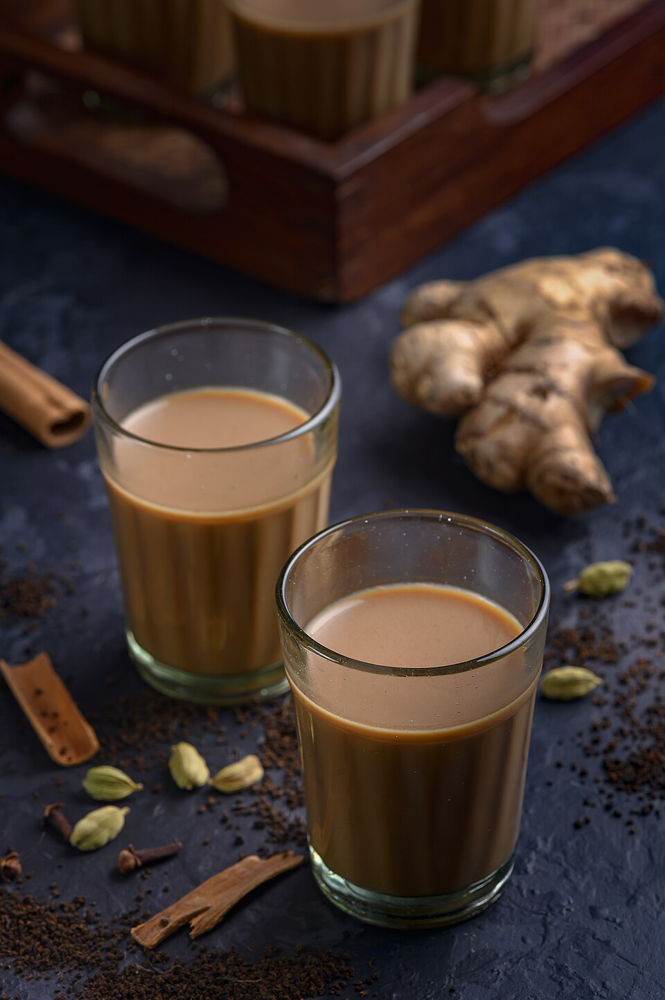

recipes/Masala Tea(Chai)

Description
Start your morning with quick and aromatic Masala chai. Masala tea, also known as masala chai,
is a flavorful and aromatic Indian beverage made by brewing black tea with a blend of
aromatic spices and herbs.
Ingredients
Milk, Sugar, Green cardamom, Black peppercorns, Clove, Ginger, Cinnamon stick. Tea
Steps
- In a saucepan, add 2 cups of water and bring it to a boil.
- Add 1 cap milk and boil it for 1 minute
- Add Green cardamom, Black peppercorns, Clove, Ginger, Cinnamon stick
- Add sugar and a tea leaves according to the taste
- Stir it for a minutes and boil it for another 4-5 minutes
- Strain it into a cup by using a strainer
- Serve it hot